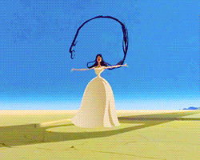
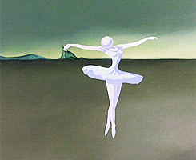
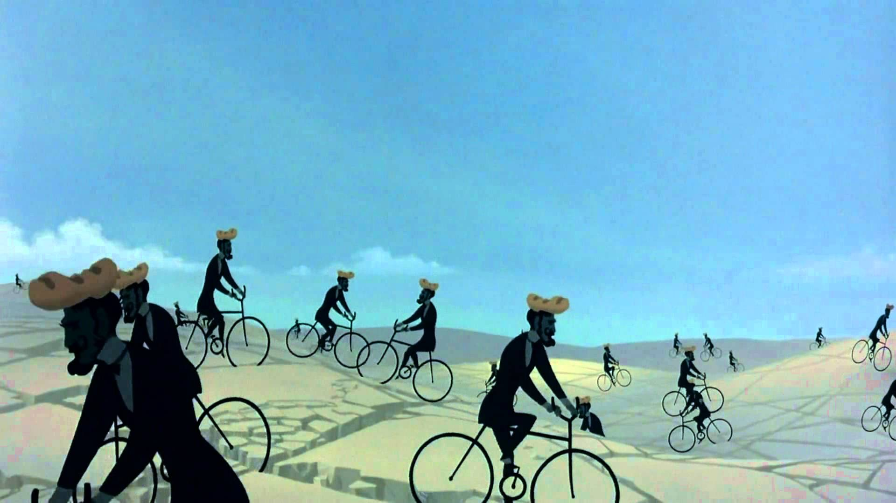

Salvador Domingo Felipe Jacinto Dalí i Domènech, Markiz od Pubola ili Salvador Felip Jacint Dalí Domènech, znan kao Salvador Dalí (Figueras, 11. svibnja 1904. – Torre Galaeta, 23. siječnja 1989.), španjolski slikar, pisac, dizajner i autor filmova.
Dalí je u povijesti zapamćen po svojim snažnim i bizarnim slikama, te kao jedan od najpoznatijih predstavnika nadrealizma u slikarstvu. No, unatoč njegovom jedinstvenom načinu slikanja, mnogi stručnjaci upravo taj način atributiraju utjecaju renesansnih majstora. Među njegovim enormnim opusom ipak je najpoznatija njegova slika Postojanost pamćenja (Mekani satovi) dovršena 1931., koja je, osim po svojoj iznimnoj umjetničkoj vrijednosti, poznata po tome što je korištena u mnogim igranim i animiranim filmovima. Svoje umjetničke ambicije, Dalí je usmjerio i na fotografiju, dizajn, književnost i snimanje filmova. Surađivao je i s Waltom Disneyjem na nikad dovršenom, za Oscara nominiranom animiranom filmu pod nazivom Destino, koji je dovršen i izdan tek 2003. godine. Na području igranog filma surađivao je sa slavnim Alfredom Hitchcockom na filmu Začarana iz 1945. za koji je napravio slavnu scenu sna, a sa svojim prijateljem, redateljem Luisom Buñuelom surađivao je (scenarij i gluma) na avangardnim filmovima Andaluzijski pas i Zlatno doba.

Dalí je tijekom cijelog svog života inzistirao na svom "arapskom porijeklu" tvrdeći da je potomak Maura koji su od 711. do 1492. (skoro 800 godina) živjeli na jugu Španjolske. Svoje navodne arapske korijene argumentirao je sljedećim:
"Moja ljubav prema svemu što je pozlaćeno i ekscesivno, moja strast za luksuz i moja ljubav za orijentalnu odjeću."
Iako su ga mnogi smatrali izrazito maštovitim, Dalí je imao potrebu da čini mnoge bizarne i čudne stvari kako bi privukao pozornost na sebe. To je nekad ljutilo pobornike njegove umjetnosti jednako kao što je ljutilo i njegove kritičare, jer su neke od tih stvari privlačile više pozornosti nego njegova umjetnost.
Isječci animiranog djela Destino




Skoro sva Dalíjeva djela imaju neko simbolično značenje ili nekakav simbolistički element u njima. Primjer toga su njegovi mekani, "tekući" satovi, koji se prvi put pojavljuju na slici Postojanost pamćenja (Mekani satovi) iz 1931., a oni simboliziraju Einsteinovu teoriju da je vrijeme relativno, a ne fiksno. Ova ideja, da satovi simboliziraju posebnu relativnost, Dalíju je pala na pamet kada je jednog dana u kolovozu buljio u komad sira.

Dalíjev kip nadrealističkog slona na jednoj londonskom izložbi. Upravo ovakvi nadrealistički slonovi bili su česti dodaci Dalíjevim slikama. Slon se također često može vidjeti na Dalíjevim slikama. Prvi put se pojavio 1944. godine na slici San uzrokovan letom pčele oko nara, sekundu prije buđenja i izgledao je isto kao i statua na slici desno. Slonovi, koji su inspirirani Berninijevom statuom slona koji nosi antički obelisk, prikazani su, uglavnom, s "dugim, višestruko spojenim, skoro nevidljivim nogama žudnje." kako nose obelisk na leđima. Isti takvi slonovi mogu se vidjeti na slikama Iskušenje svetog Antuna (1946.) i Slonovi (1948.). Spareni s ovim kržljavim nožicama, ti tereti, značajni po svojoj prevelikoj težini, stvaraju fantomsku realnost. "Slon je deformacija u prostoru", tvrdi jedna analiza, "njihove noge, tanke kao vreteno, kontrastiraju ideju bestežinskog stanja sa strukturom." U djelu Dalí i nadrealizam, Dalí kaže: „(...) Ja slikam slike koje me tjeraju da umrem za sreću, ja stvaram s potpunom prirodnošću, bez ikakve brige o estetici, ja stvaram djela koje me inspiriraju s apsolutnom emocijom i pokušavam ih naslikati iskreno.”
Osim slona i satova, jaje je također jedan od čestih Dalíjevih motiva. On jaje povezuje s nečim očinskim i interauternim, no koristi ga kako bi simbolizirao nadu i ljubav. Jaje se pojavljuje na slikama Veliki masturbator (1929.), Zagonetka žudnje - majko moja, majko moja, majko moja (1929.), Pečena jaja na tanjuru bez tanjura (1932.), Geološka sudbina (1933.) i Metamorfoza narcisa (1937.). Na njegovim slikama, osim tri navedena simbola/elementa, pojavljuju se i različite životinje: mravi simboliziraju smrt i iznimnu seksualnu žudnju, puž je povezan s ljudskom glavom (to dolazi od njegovog prvog susreta sa Sigmundom Freudom kada je vidio puža na biciklu), a skakavac je simbol straha i ispraznosti. Dalíjev muzej u Figuerasu na čijem se krovu mogu vidjeti jaja, za Dalíja simbol nade i ljubavi. Zanimljivost je da je Dalí dva, od tri primarna simbola, koristio i u svom kiparskom radu (vidi slike lijevo i desno), dok simbol jajeta nikad nije prenio na neku od svojih skulptura, ali se zato simbol jajeta može vidjeti na krovu Dalíjevog muzeja u njegovom rodnom gradu Figuerasu.

Slika iz animiranog djela Destino na kojem su radili W.Disney i S.Dali.
Dalijevim djelima
https://www.wikiart.org/en/salvador-dali/all-works
Njegovom životu
http://thedali.org/timeline/
Dalijevi citati
https://www.goodreads.com/author/quotes/165858.Salvador_Dal_

Zanimljivo je da je, osim slonova i satova, jaje jedan od čestih Dalijevih motiva. On jaje povezuje s nečim očinskim i interauternim, a koristi ga kako bi simbolizovao nadu i ljubav.
Dali o slikarstvu govori kao o magiji. Suprotno od većine umjetnika XX vijeka ima potrebu da se opravdava pred savremenicima. Njegov stav prema savremenim slikarima je taj što im zamjera da su zaboravili tehniku starih majstora
Rođen je 11. maja 1904. godine, a umro 23. januara 1989.